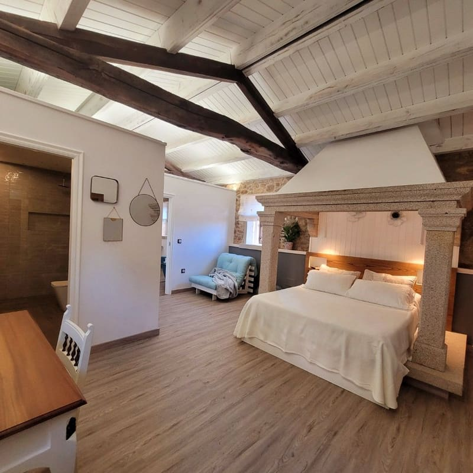
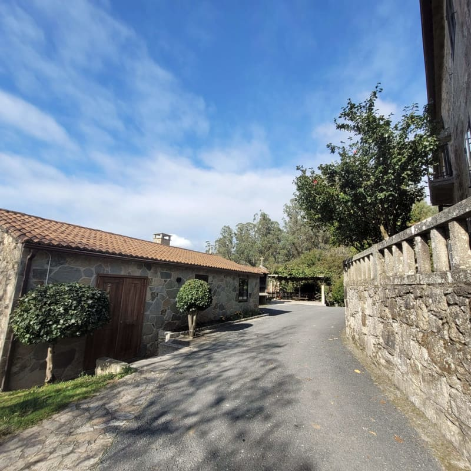
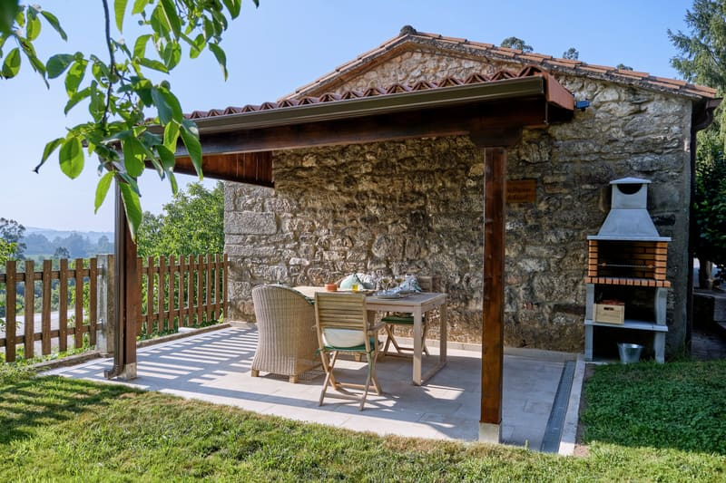

Aparte, para dos
Casa Pequena do Casal
El antiguo cobertizo de juegos, convertido en una casita de 50 m². La cama de 1,60 duerme bajo la lareira, donde antes estaba el fuego de la casa. Cocina con horno y lavavajillas, suelo radiante, aire acondicionado, albornoces y flores frescas. Fuera, su propio jardín con pérgola y barbacoa.
La cama, por su altura, no es para personas con problemas de movilidad. Hay un sofá cama si vienes con un peque.
Preguntar por la Casa Pequena